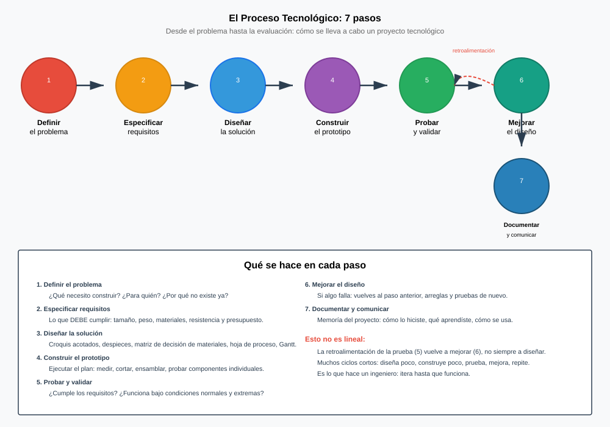
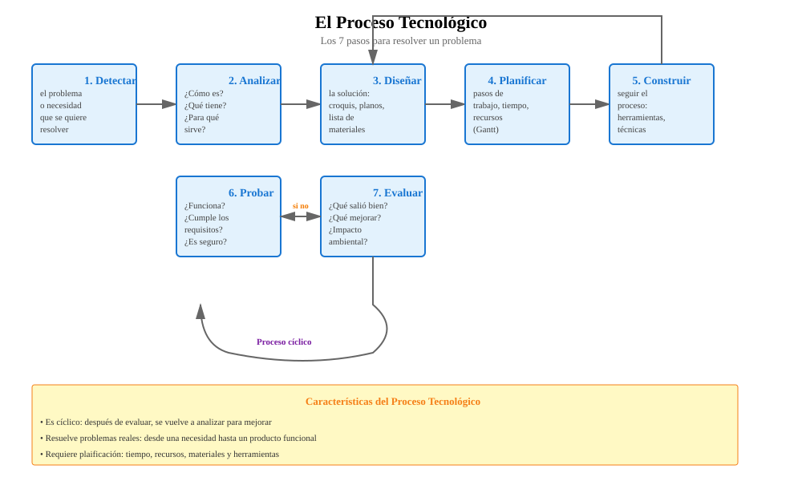
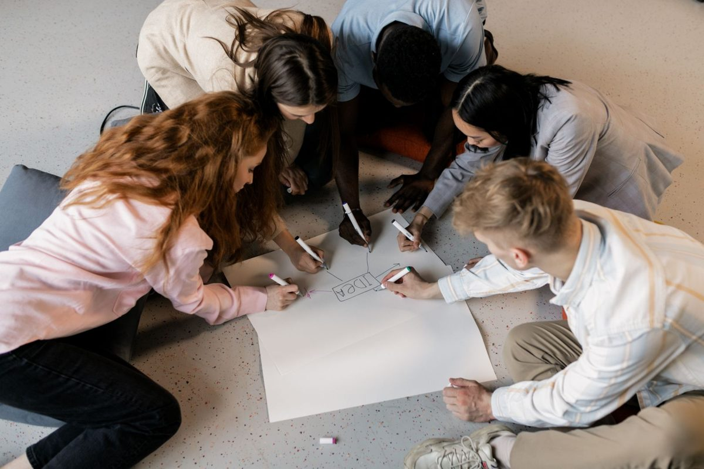
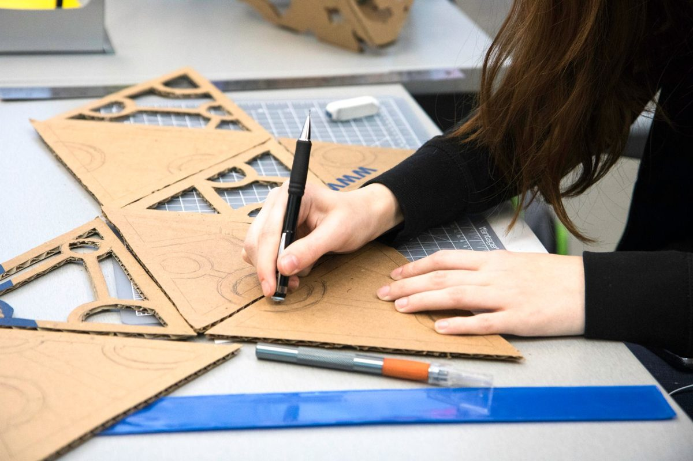
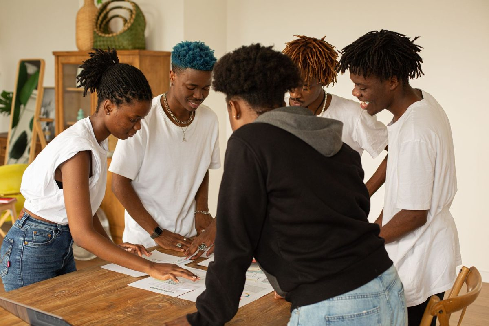
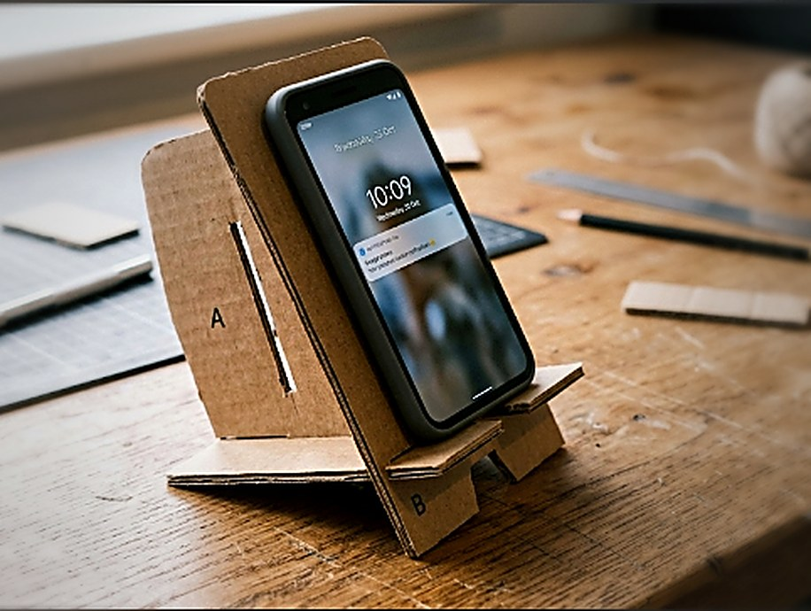
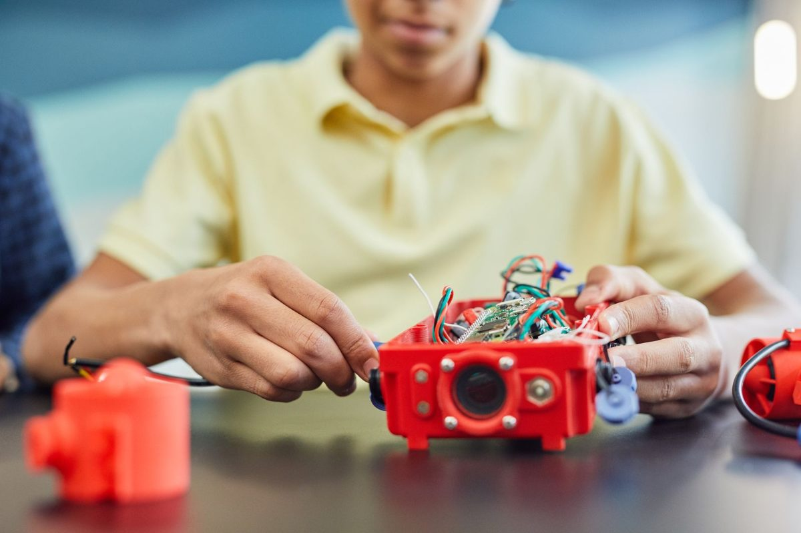

Por qué hace falta un método
Todo el mundo sabe resolver problemas. Lo que no todo el mundo sabe es hacerlo de forma que el resultado no dependa de la suerte.
Un problema de verdad, de los que pasan en un instituto:
Tenéis cinco minutos y una hoja. Resolvedlo. Sin instrucciones, sin método, sin que yo os diga nada más.
Comparad lo que habéis escrito. Muy probablemente cada grupo tenga una cosa distinta: unos habrán dibujado un mueble, otros habrán escrito una idea en una línea, otros no habrán pasado de discutir. ¿Cuál de las soluciones es la buena?
No se puede saber. Y ese es el problema: no porque las ideas sean malas, sino porque no hay forma de compararlas. Nadie ha dicho qué móviles tiene que aguantar, ni con qué inclinación, ni de qué se hace, ni cómo se sabría si funciona.
Lo que acaba de fallar
No os ha fallado la creatividad. Os ha fallado el orden. Os habéis puesto a dar soluciones antes de saber qué tenía que cumplir la solución.
Esto le pasaba también a la gente que fabricaba cosas hace doscientos años. Un artesano resolvía el problema en su cabeza, y el resultado dependía de su experiencia. Funcionaba mientras las cosas eran sencillas y las hacía una sola persona. En cuanto hubo que fabricar miles de piezas iguales, en sitios distintos y entre varias personas, dejó de valer: hacía falta una forma de trabajar que otro pudiera seguir.
Definición
El proceso tecnológico es el orden de pasos que se sigue para pasar de una necesidad a un objeto que la resuelve, de forma que el resultado no dependa de la inspiración de quien lo hace y otra persona pueda continuar el trabajo.

Esto es exactamente el problema de esta sesión. Aquel saber vivía solo en la cabeza y en las manos de los artesanos, y se perdía con ellos. La Encyclopédie fue el primer intento serio de escribirlo para que otro pudiera seguirlo: cientos de láminas como esta, durante veinte años. Poner un método por escrito no es burocracia, es lo que hace que el conocimiento sobreviva a quien lo tiene. Laurent Grillet · Dominio público · Wikimedia Commons
Los pasos
Los siete pasos
- Detectar la necesidad. Qué falta y a quién le falta.
- Analizar el problema. Qué condiciones tiene que cumplir la solución. A esto se le llaman requisitos, y es el paso que os habéis saltado.
- Buscar ideas. Varias, no una. Cuantas más, mejor la elegida.
- Elegir y diseñar. Escoger una con un criterio, y concretarla: medidas, materiales, piezas, dibujos.
- Planificar. Quién hace qué, con qué y en cuánto tiempo.
- Construir.
- Evaluar. ¿Cumple los requisitos que escribimos en el paso 2? Si no, se vuelve atrás.
Requisito: condición que la solución tiene que cumplir, escrita de forma que se pueda comprobar sin discutir.
Cómo se llama esto en el libro
Lo que aquí llamamos los siete pasos, el libro lo llama las fases del proyecto técnico. Es lo mismo con otros nombres, y conviene saber los dos porque el examen usa los suyos:
| Fase | Qué se hace | Qué produce |
|---|---|---|
| 1. Identificación del problema y búsqueda de información | Definir qué falta y mirar qué soluciones existen ya | Un problema claro |
| 2. Diseño técnico | Idear varias soluciones y dibujarlas: bocetos, croquis, planos con medidas | El diseño elegido |
| 3. Planificación y organización | Pasos, orden de montaje, herramientas, reparto y tiempos | El plan de trabajo |
| 4. Construcción | Fabricar el prototipo siguiendo el diseño | El objeto |
| 5. Verificación y evaluación | Comprobar si cumple. Si no, se vuelve atrás | La memoria técnica |
Tres palabras que hay que saber decir
Prototipo: el primer ejemplar que se construye para probar si la idea funciona. No es el producto final; es el que sirve para descubrir qué falla.
Memoria técnica: el documento donde queda escrito todo el proyecto —el problema, los diseños, los materiales, el presupuesto y lo que pasó al probarlo—. Sin memoria, el proyecto no se puede repetir ni defender.
Presupuesto: lo que cuesta, pieza a pieza, antes de empezar.
El diagrama de flujo: el plan dibujado
Un diagrama de flujo es el orden de las operaciones dibujado con cajas y flechas. Se usa en la fase 3 y sirve para una cosa muy concreta: ver de un vistazo qué va antes que qué y dónde hay que decidir algo.
- Elipse: inicio y fin.
- Rectángulo: una operación («cortar los cuatro listones»).
- Rombo: una decisión, con dos salidas, sí y no («¿mide 40 cm?»).
- Flechas: el orden. Y pueden volver atrás, que es lo que pasa cuando algo no sale.
Si el diagrama de una silla te sale sin ningún rombo, casi seguro que te has dejado las comprobaciones: en un taller siempre hay un momento de «¿ha quedado bien? ¿sigo o lo repito?».
Y una pregunta que va al final del proceso pero decide desde el principio
Todo lo que fabricas se acaba tirando alguna vez. La obsolescencia es que un objeto deje de servir, y tiene dos versiones muy distintas:
- Obsolescencia técnica: deja de funcionar o se queda corto de verdad.
- Obsolescencia percibida: funciona perfectamente, pero parece viejo. Es la del móvil que se cambia porque salió otro.
Frente a eso, el consumo sostenible no es reciclar más: es sobre todo comprar menos y elegir mejor. Reparar antes que sustituir, comprar de segunda mano, elegir lo que se puede desmontar y tiene repuestos, y dejar el reciclaje para cuando ya no queda otra. Es una decisión que se toma en la fase 2, no al tirar el objeto.

El maestro de taller
Por qué hubo que inventar un método, y cuáles son los siete pasosVoz sintetizada y audio propio. La boca sigue el volumen real de la voz, así que se mueve cuando habla y se para en los silencios.
Y no es una línea recta
Casi siempre se vuelve atrás. Construyes y descubres que la ranura no aprieta: vuelves al diseño. Eso no es fracasar, es cómo funciona. Lo que sería un fallo es descubrirlo cuando ya has fabricado mil unidades.

Qué hay que hacer
Volved al problema del móvil tumbado. Sin proponer ninguna solución todavía, escribid la lista de requisitos que tendría que cumplir.
- Al menos ocho requisitos, cada uno en una línea.
- Que sean comprobables. «Que sea bonito» no vale; «que la pantalla quede entre 60º y 70º respecto a la mesa» sí, porque eso se mide con un transportador.
- Marcad cuáles son imprescindibles y cuáles son deseables.
- Al final, y solo al final, escribid una idea de solución en tres líneas.
Cómo se evalúa
- Hay ocho requisitos o más (2 puntos).
- Todos son comprobables: se puede decir sí o no sin discutir (4 puntos).
- Están separados los imprescindibles de los deseables (2 puntos).
- La idea final responde a los requisitos escritos (2 puntos).
Comparad ahora la lista de requisitos de cada pareja. Veréis algo interesante: las listas se parecen mucho más entre sí que las soluciones de hace media hora.
Eso es exactamente lo que aporta el método. Las soluciones pueden y deben ser distintas; los requisitos, si el problema está bien analizado, son casi los mismos para todos. Por eso se empieza por ahí.
- ¿Por qué se escriben los requisitos antes de pensar soluciones?
Ver respuesta
Porque son el criterio con el que se compara después. Sin ellos no se puede decidir qué solución es mejor, solo cuál gusta más.
- «Que sea resistente»: ¿es un buen requisito?
Ver respuesta
No. No es comprobable. Sí lo sería: «que sujete un móvil de 165 mm sin volcar al tocar la pantalla».
- ¿Qué se hace si al construir descubres que el diseño no funciona?
Ver respuesta
Se vuelve al paso de diseño. El proceso tecnológico no es una línea recta: volver atrás forma parte de él.
Lectura del tema
Una sesión entera dedicada a leer y contestar. 31 párrafos numerados: cada uno lee el suyo en voz alta, en orden. Después, diez preguntas por escrito.
Muchas ideas, y una forma de elegir
Tener ideas es fácil. Lo difícil es no quedarse con la primera, y poder explicar por qué eliges la que eliges.
Ayer acabasteis con una lista de requisitos y una sola idea escrita en tres líneas. Sacad esa hoja.
Casi seguro que tu respuesta se parece a una de estas tres: fue la primera que se nos ocurrió, era la más fácil, o la dijo el que habla más alto. Ninguna de las tres es un criterio.
Esto tiene nombre y está estudiado. Se llama fijación: en cuanto aparece una solución razonable, el cerebro deja de buscar y empieza a defenderla. No es pereza, es cómo funcionamos. Por eso los métodos de generación de ideas no sirven para tener ideas —eso ya lo sabes hacer— sino para obligarte a seguir buscando cuando ya tienes una que vale.
Primero muchas, luego se elige
La regla es contraintuitiva: separar el momento de proponer del momento de juzgar. Mientras se proponen ideas, no se critica ninguna. Ni las malas. Sobre todo las malas, porque una idea imposible dicha en voz alta le da a otro una idea posible.
Generar ideas: las cuatro reglas
- Cantidad antes que calidad. Primero muchas, elegir viene después.
- Nada se critica mientras se propone.
- Las ideas raras se apuntan igual. Suelen ser el origen de la buena.
- Se construye sobre lo dicho. «Como lo de X, pero…» vale y mucho.
Y ahora hay que elegir, sin que sea a dedo
Aquí es donde casi todos los grupos se rompen: se vota a mano alzada, gana el más convincente y el resto se desentiende. La alternativa es puntuar con los requisitos de ayer convertidos en criterios, dando a cada uno un peso: no todos importan igual.
Matriz de decisión
Tabla con las ideas en las filas y los criterios en las columnas. Cada criterio lleva un peso según lo importante que sea. Cada idea se puntúa en cada criterio, y el total es la suma de puntuación × peso. Gana la de más puntos.
No elige por ti: te obliga a decir con qué criterio eliges, y deja la decisión por escrito para poder discutirla.
Esta forma de decidir no la inventó la tecnología: viene de la ingeniería industrial y de la gestión de proyectos del siglo XX, cuando las decisiones empezaron a ser demasiado caras para tomarlas por intuición. Si un avión lleva un componente u otro, alguien tiene que poder explicar por qué —y responder si sale mal—. La matriz no garantiza acertar. Garantiza que la decisión sea rastreable.
Qué hay que hacer
- Seis ideas en seis minutos para el problema del móvil. Una por minuto, sin criticar ninguna. Si os atascáis, apuntad una absurda a propósito y seguid.
- Elegid cuatro criterios de vuestra lista de requisitos de la sesión anterior.
- Dadle a cada criterio un peso de 1 a 3, y justificad en una línea por qué ese peso.
- Construid la matriz y puntuad de 1 a 3 cada idea en cada criterio.
- Escribid qué idea gana y, en dos líneas, por qué gana.
Cómo se evalúa
- Hay seis ideas y al menos una es claramente arriesgada (2 puntos).
- Los criterios salen de los requisitos, no son nuevos (2 puntos).
- Los pesos están justificados (2 puntos).
- La matriz está bien calculada (2 puntos).
- La conclusión explica el porqué, no solo el qué (2 puntos).

Foto de Alena Darmel en Pexels. Es de su autor y no forma parte del material publicado bajo la licencia de esta página.
Comparad la idea ganadora con la que habíais escrito ayer a bote pronto. En bastantes parejas no será la misma.
Eso no quiere decir que la de ayer fuera mala. Quiere decir que no sabíais por qué la habíais elegido, y ahora sí.
- ¿Por qué no se critican las ideas mientras se proponen?
Ver respuesta
Porque criticar corta la generación. Y porque una idea imposible dicha en voz alta suele darle a otro una idea posible.
- ¿Qué es el peso de un criterio y para qué sirve?
Ver respuesta
Un número que dice cuánto importa ese criterio frente a los demás. Sin pesos, «que sea barato» valdría lo mismo que «que aguante», y no es así.
- ¿La matriz elige por ti?
Ver respuesta
No. Te obliga a decir con qué criterio eliges y deja la decisión por escrito para poder discutirla. Si cambias los pesos, cambia el resultado: por eso los pesos hay que justificarlos.
De una frase a algo que se pueda construir
Tu idea ha ganado la matriz. Ahora hay que convertirla en medidas, piezas y materiales, porque una idea no se puede cortar.
Sacad la idea ganadora de ayer, la que está escrita en tres líneas.
Pasados los cinco minutos, comparad el dibujo que os han hecho con el que tenéis en la cabeza. No se parecen. Y no es porque dibujen mal: es que vuestra hoja no decía cuántas piezas hay, ni cuánto mide cada una, ni de qué son, ni cómo se sujetan entre ellas.
Subrayad en vuestra hoja todas las palabras que otra persona podría entender de dos maneras distintas. Casi siempre son casi todas.
El 23 de septiembre de 1999 la NASA perdió la sonda Mars Climate Orbiter al llegar a Marte. No falló ningún motor ni ningún ordenador: el equipo que fabricó la sonda entregaba los datos de empuje en libras-fuerza y el que la pilotaba los leía en newtons. Nadie lo había escrito, porque a cada equipo le parecía evidente. La sonda entró demasiado bajo en la atmósfera y se perdió: 125 millones de dólares por una unidad que nadie puso en el papel. Lo que le ha pasado a vuestra hoja es exactamente lo mismo, más barato.
Tres dibujos que no son el mismo dibujo
En tecnología no se dibuja una vez: se dibuja tres, y cada dibujo sirve para una cosa distinta. Confundirlos es lo que acaba de pasaros.
Boceto, croquis y plano
- Boceto · a mano alzada y sin medidas. Sirve para pensar y para enseñar una idea deprisa. Se hacen muchos y se tiran casi todos.
- Croquis · a mano alzada también, pero con las medidas escritas. Ya no sirve para pensar: sirve para decidir. Es lo que se lleva al taller cuando la pieza es sencilla.
- Plano · a escala, con instrumentos o con el ordenador, acotado y con cajetín. Es el documento: con él, otra persona construye la pieza sin preguntarte nada.
Acotar: escribir sobre el dibujo las medidas que hacen falta para fabricarlo, en milímetros, y cada una una sola vez.

Foto de Roxanne Minnish en Pexels. Es de su autor y no forma parte del material publicado bajo la licencia de esta página.
Lo que no se ve en un dibujo bonito: el despiece
Un dibujo del conjunto enseña cómo queda. Para construir hace falta además saber cuántas piezas hay, de qué son y cuánto mide cada una. A separar el conjunto en sus piezas se le llama despiece, y a la tabla que las lista, lista de materiales.
Parece burocracia y es justo lo contrario: es la lista de la compra. Sin ella llegas al taller, descubres que te falta la mitad del cartón y pierdes la sesión entera.
La lista de materiales
Una fila por pieza distinta, y estas columnas:
| Pieza | Cant. | Material | Medidas (mm) | De dónde sale |
|---|---|---|---|---|
| A · respaldo | 1 | Cartón de caja, 4 mm | 90 × 120 | Caja de folios |
| B · costilla | 1 | Cartón de caja, 4 mm | 110 × 80 | La misma caja |
Es la lista de un soporte de móvil: dos piezas de cartón que se encastran en cruz, una de pie y otra tumbada. Cero tornillos, cero pegamento y cero euros, porque el cartón sale de una caja que iba a la basura.
Fíjate en lo corta que es la lista. Eso no es pobreza de proyecto: es una decisión. Cada pieza que añades es una pieza que hay que trazar, cortar, medir y que puede salir mal.
Descargar la plantilla a tamaño real (A4)
Es para la sesión de taller, no para esta: aquí lo que se aprende es de dónde sale cada medida. Y ojo, va dibujada para cartón de 4 mm; si el vuestro mide otra cosa, la ranura hay que ajustarla.
Las medidas no se inventan: salen de los requisitos
Esta es la parte que de verdad distingue el diseño del dibujo. Cada número del croquis tiene que poder contestar a la pregunta ¿y por qué ese?. Mirad de dónde salen los del soporte:
- «Que quepa un móvil con funda» → el más ancho del aula mide 80 mm. Dejando 5 mm de aire a cada lado, las dos piezas miden 80 + 2 × 5 = 90 mm de ancho. Ni una más: el cartón que sobra por los lados no sujeta nada y sí estorba en la mochila.
- «Que la pantalla quede entre 60º y 70º» → el móvil se apoya abajo en el tope y arriba en el canto de A. Con el respaldo a 80 mm de alto y el tope a 36 mm por delante, sale un poco más de 65º. Y no se discute a ojo: se mide con el transportador cuando esté montado.
- «Que no vuelque al tocar la pantalla» → la costilla lleva 70 mm de cola por detrás del respaldo. Con eso el largo de B sale solo: 36 + 4 + 70 = 110 mm. Los 4 son el grueso del propio cartón de A, que también ocupa.
- «Que salga de un A4» → las dos piezas se trazan sobre un trozo de cartón del tamaño de un folio, que es lo que se saca de cualquier caja. Una encima de otra ocupan 110 × 210 mm, y caben; lado a lado no, porque harían falta 90 + 110 = 200 mm de ancho y la hoja sólo tiene 210 menos los márgenes de la impresora. Ese requisito no se discute: se pone la hoja encima y se mira.
- «Que se monte sin pegamento» → encastre en cruz. Cada ranura mide de ancho lo que mida tu cartón —mídelo con el calibre, suele andar por los 4 mm— y de profundidad la mitad de la altura: 80 ÷ 2 = 40 mm. Así las dos piezas se cruzan y quedan a ras.
Qué hay que hacer
- Un croquis del conjunto, a mano alzada, con las tres medidas generales: alto, ancho y fondo.
- Un croquis de cada pieza distinta, acotada en milímetros. Cada medida, una sola vez.
- La lista de materiales completa, con las cinco columnas: pieza, cantidad, material, medidas y de dónde sale.
- Debajo, una línea por cada medida general diciendo de qué requisito sale. Si alguna no sale de ninguno, o sobra el número o falta el requisito.
- Volved a pasárselo a la pareja de al lado, otra vez sin hablar. Si ahora sí dibujan lo que tenéis en la cabeza, está terminado.
Cómo se evalúa
- Están todas las piezas y las cantidades cuadran con el croquis (2 puntos).
- Las cotas están en milímetros y ninguna se repite (2 puntos).
- Cada medida general está justificada con un requisito (3 puntos).
- La lista de materiales dice el material y la medida comercial (2 puntos).
- La otra pareja reconoce el objeto sin preguntar nada (1 punto).
Hace dos sesiones teníais una frase. Ahora tenéis un papel con el que otro puede ponerse a cortar. Entre una cosa y otra no ha habido ninguna idea nueva: solo decisiones tomadas y escritas.
- ¿En qué se diferencian un boceto y un croquis?
Ver respuesta
En las medidas. Los dos van a mano alzada, pero el boceto sirve para pensar y el croquis para decidir: lleva las cotas escritas, en milímetros.
- ¿Para qué sirve la lista de materiales si el croquis ya lo enseña todo?
Ver respuesta
El croquis enseña cómo queda; la lista dice qué hay que traer: cuántas piezas, de qué material y de qué medida comercial. Es la lista de la compra, y sin ella se pierde una sesión de taller.
- La pieza B del ejemplo mide 110 mm de largo. ¿De dónde sale ese número?
Ver respuesta
De tres requisitos sumados: 36 mm por delante del respaldo —lo que hace falta para que la pantalla quede a 66º—, más los 4 mm que ocupa el cartón del propio respaldo, más 70 mm de cola por detrás para que no vuelque al tocar la pantalla. 36 + 4 + 70 = 110 mm. Ninguna medida se inventa.
Quién hace qué, y en cuántos minutos
El grupo que mejor diseña no es siempre el que termina. Casi nunca se pierde por no saber hacerlo: se pierde por el orden.
Escribid tres causas posibles, y al lado de cada una, qué habría que haber hecho antes de entrar al taller para evitarla.
Poned en común. Casi todas las respuestas caen en tres sitios, y ninguno tiene que ver con lo bien que se maneja un cúter:
- Nadie sabía qué le tocaba. Cuatro personas alrededor de la misma pieza y ninguna con la siguiente preparada.
- El orden era imposible. Se intentó cortar una ranura en una pieza que aún no tenía contorno, o encastrar sin haber probado antes el ancho de la ranura en un recorte.
- Nadie contó con las esperas. Hay dos bases de corte para quince parejas, y la cola tarda lo que tarda: eso no se acelera dando prisa.
La idea de dibujar el tiempo en barras la popularizó Henry Gantt hacia 1910, en astilleros y fábricas donde nadie podía ver de un vistazo quién estaba esperando a quién. No fue el primero: el polaco Karol Adamiecki había dibujado lo mismo en 1896, pero lo publicó en polaco y en ruso y casi nadie se enteró —una lección aparte sobre para qué sirve escribir las cosas—. Los diagramas de Gantt se usaron para construir barcos en la Primera Guerra Mundial y para levantar la presa Hoover. Cien años después siguen siendo lo mismo: una fila por tarea y una barra tan larga como dure.
Planificar es contestar cuatro preguntas por cada tarea
Y las cuatro se contestan antes de coger una herramienta, con el croquis delante.
La hoja de proceso
Una fila por tarea, y estas columnas:
| N.º | Tarea | Quién | Herramienta | Previsto | Real |
|---|---|---|---|---|---|
| 1 | Medir el grueso del cartón y escuadrar el trozo | Los dos | Calibre y escuadra | 5 min | |
| 2 | Trazar la pieza A | A | Regla, escuadra y lápiz | 8 min | |
| 3 | Trazar la pieza B | B | Regla, escuadra y lápiz | 10 min | |
| 4 | Cortar el contorno de A | A | Cúter y regla metálica | 10 min | |
| 5 | Cortar el contorno de B | B | Cúter y regla metálica | 12 min | |
| 6 | Cortar las dos ranuras y la muesca | Los dos | Cúter y recorte de prueba | 8 min | |
| 7 | Esperar turno de la base de corte | Nadie | — | 10 min | |
| 8 | Montar, medir el ángulo y ajustar | Los dos | Transportador | 5 min |
La columna Real se rellena en el taller. Es la que enseña a calcular tiempos, y la que casi nadie rellena.
El orden no es libre
Hay tareas que no pueden empezar hasta que otra termine: no se corta lo que no está trazado, y no se cortan las ranuras de una pieza que todavía no tiene contorno. A eso se le llama precedencia, y es lo que convierte una lista en un plan.
Y hay una tarea especial en la tabla de arriba: la n.º 7. Dura diez minutos y no la hace nadie: es la cola de la base de corte, que en el aula hay dos y sois quince parejas. Las esperas también ocupan tiempo, y un plan que no las dibuje miente. Esta además es de las peores, porque no depende de vosotros: depende de que los de al lado terminen.
Y antes de entrar al taller: las normas
No son una lista de prohibiciones: son las cosas que salen mal todos los cursos. Si una te parece exagerada, es que aún no la has visto pasar.
Siete normas del taller
- El cúter siempre sobre la base de corte, nunca directamente sobre la mesa. Una cuchilla que resbala sobre la madera salta, y salta hacia donde no estás mirando.
- La regla que guía el corte es metálica. Con una de plástico, el cúter se come el canto y en ese mismo momento se te va la mano por encima.
- La mano que sujeta la regla va detrás del filo y con los dedos arqueados, nunca estirados por delante. Y se corta hacia fuera, no hacia el cuerpo.
- Varias pasadas suaves, nunca una a lo bestia. El cartón de 4 mm no se atraviesa de una: quien lo intenta aprieta, el cúter se desvía y sale torcido, o peor.
- Cuchilla nueva o recién partida. Una cuchilla roma no corta menos: obliga a apretar más, que es justo lo que hace que patine.
- El cúter se cierra en cuanto se suelta, aunque sea un segundo, y no se deja en el borde de la mesa. Una herramienta en el borde acaba en un pie.
- Si algo se rompe o se atasca, se para y se avisa. Forzar una herramienta atascada es la forma más rápida de hacerse daño.
Qué hay que hacer
- Partid vuestro montaje en seis u ocho tareas. Ni tres (demasiado gordas para repartirlas) ni veinte (no os va a dar tiempo ni a escribirlas).
- Rellenad la hoja de proceso con sus seis columnas. La de Real se deja en blanco.
- Marcad con una flecha qué tarea no puede empezar hasta que acabe otra.
- Dibujad el Gantt en papel cuadriculado: un cuadro = dos minutos. Las esperas también se dibujan.
- Escribid abajo a qué minuto termináis y qué dos tareas son las que mandan en esa cifra.
- Y una última línea: qué hay que traer de casa, si hace falta algo.
Cómo se evalúa
- Las tareas cubren todo el montaje, sin saltos (2 puntos).
- Cada una tiene responsable, herramienta y tiempo (2 puntos).
- Las precedencias son correctas: nada se hace antes de lo que puede (2 puntos).
- El Gantt aprovecha a las dos personas y dibuja las esperas (2 puntos).
- Dice a qué minuto se termina, y sale de las barras (2 puntos).

Foto de Monstera Production en Pexels. Es de su autor y no forma parte del material publicado bajo la licencia de esta página.
Comparad los tiempos totales de las distintas parejas. Van a salir muy distintos, con el mismo soporte. Eso no significa que unos sean más rápidos: significa que unos han contado las esperas y otros no.
- ¿Por qué el secado de la cola ocupa una fila del Gantt si no lo hace nadie?
Ver respuesta
Porque ocupa tiempo, y el plan es un reparto del tiempo, no del trabajo. Una espera que no está dibujada aparece igual, pero por sorpresa y cuando ya no queda sesión.
- ¿Qué es la holgura de una tarea?
Ver respuesta
Los minutos que puede retrasarse sin retrasar el final. En el ejemplo, Cortar A acaba en el minuto 23 y no hace falta hasta el 27: tiene 4 minutos de holgura. Las tareas sin holgura son las que hay que vigilar.
- Vais dos en el grupo y una tarea la tenéis que hacer los dos juntos. ¿Eso ayuda o estorba?
Ver respuesta
Estorba, salvo que la tarea lo exija de verdad (sujetar mientras el otro encola, por ejemplo). Mientras los dos estáis en la misma pieza, ninguna otra avanza. Se ve en el Gantt: una fila ocupada y el resto vacío.
Construir, que es donde se paga lo mal medido
La parte que todo el mundo creía que era la única. Dura menos de lo que pensabais y sale bien o mal por lo que hicisteis en las cuatro sesiones anteriores.
Cinco minutos, y no son burocracia: son los cinco minutos que evitan las dos horas de después. Sobre la mesa, antes de tocar una herramienta:
Lista de antes de empezar
- El croquis acotado y la hoja de proceso, a la vista de los dos.
- El material contado contra la lista: si falta algo, se sabe ahora.
- Las gafas puestas y la mesa despejada.
- Un sitio decidido para las piezas terminadas, que si no acaban debajo de un codo.
- Un reloj a la vista: la columna Real hay que rellenarla sobre la marcha, no de memoria al final.
Mirad vuestro Gantt y decid en voz alta quién empieza con qué. Si hay que discutirlo ahora, es que el plan no estaba terminado.
Cuatro operaciones, y en este orden
Todo lo que vais a hacer hoy es una de estas cuatro cosas: medir y marcar, cortar, unir y acabar. Cada una tiene una forma de salir mal.
1 · Medir y marcar
La regla de carpintería de toda la vida: mide dos veces, corta una. Y dos detalles que parecen tonterías y no lo son:
- La raya del lápiz tiene grosor. Un lápiz normal deja medio milímetro, y en ocho cortes eso son 8 × 0,5 = 4 mm: una ranura que ya no aprieta. Por eso se corta siempre por fuera de la raya, del lado que se tira.
- Las medidas se toman todas desde el mismo extremo, no una desde cada punta. Si encadenas medidas, encadenas errores.
Se marca con escuadra, apoyando su ala contra el canto de la pieza. Una raya a ojo se ve derecha y no lo está.
2 · Cortar
El cúter no atraviesa el cartón de una pasada, y quien lo intenta lo paga dos veces: se desvía y encima aplasta la onda. Se hacen tres pasadas. La primera sólo marca, rompiendo el papel de arriba; la segunda entra en la onda; la tercera termina. Y la regla no se mueve entre pasada y pasada, porque si se mueve el corte sale escalonado.
Para las ranuras hay un truco que ahorra piezas: se cortan los dos lados primero y el fondo al final, y el recorte se saca tirando, nunca haciendo palanca con el cúter. Una ranura empezada por el fondo se abre sola y se lleva la pieza por delante.
3 · Unir
Y aquí viene lo mejor de este proyecto: no hay que unir nada. Las dos piezas se sujetan solas porque una entra en la otra. A esa unión se le llama encastre, y no lleva ni cola, ni grapas, ni cinta.
Es un vídeo de manualidades, no de clase, y por eso vale: hace exactamente lo que acabas de leer. Dos siluetas iguales de cartón de una caja, una ranura en cada una —una desde arriba, otra desde abajo— y se cruzan. Cambia la forma del contorno, no la unión. Fíjate en una cosa mientras lo ves: en ningún momento mide la ranura, la va probando. Con un abeto que solo tiene que quedarse de pie da igual; con tu soporte, que tiene que aguantar un móvil sin abrirse, no. El vídeo no se carga hasta que lo pulsas, y se reproduce sin cookies de seguimiento. Si la red del centro bloquea YouTube, ábrelo directamente aquí. El vídeo es de su autor y no forma parte del material publicado bajo la licencia de esta página.
Que aguante o no depende de un solo número: el ancho de la ranura. Y ese número no se copia de ningún sitio, se mide en tu cartón y se prueba en un recorte.
Si a pesar de todo dais un punto de cola a alguna esquina —a veces conviene, para que una ranura que quedó un pelo ancha no baile—, poned poca: el cartón se la bebe por la onda y la que sobra empapa el papel y lo abomba. Y limpiad la que rebose antes de que seque, porque después no se quita: arranca el papel con ella.
4 · Acabar
- En cartón no se lija ni se barniza: se repasan los cantos. Un corte en tres pasadas deja pelusa de papel en el borde, y se quita pasando el dedo, no rascándola con el cúter.
- Se prueba el encaje antes de forzarlo. Si la costilla no entra con la mano, no entra a martillazos: se repasa la ranura con una pasada más, y se vuelve a probar. Una ranura se puede ensanchar; no se puede estrechar.
- Se escriben la A y la B en las piezas, y el nombre de los dos en la costilla. Parece una tontería hasta que hay veintiocho soportes iguales encima de la misma mesa.

Se ve bien la ranura de la pieza A, la que recibe a la B: es un corte limpio y recto, del ancho justo. Ahí se gana o se pierde el proyecto. Y detrás, desenfocados a propósito, la base de corte y los recortes de cartón: no son basura, son las pruebas de ranura del paso 6. Roberto P. García Llorente · CC BY-SA 4.0
Qué hay que hacer
- Construir, siguiendo la hoja de proceso en su orden. Si os la saltáis, apuntad por qué: eso también es información.
- Rellenar la columna Real tarea a tarea, con el reloj delante. No al final.
- Cada vez que algo no salga como estaba previsto, una línea en el parte de incidencias: qué pasó, qué hicisteis y cuántos minutos costó.
- Si hay que cambiar una medida, se cambia en el croquis también. Un plano que no coincide con la pieza es peor que no tener plano.
- Dejar la mesa y las herramientas como estaban. Entra en la nota.
Cómo se evalúa
- El objeto está montado y se sostiene (2 puntos).
- Coincide con el croquis, o el croquis se ha corregido (2 puntos).
- La columna Real está rellena tarea a tarea (2 puntos).
- Hay parte de incidencias, aunque sea para decir que no hubo ninguna (2 puntos).
- Normas de seguridad y puesto recogido (2 puntos).
Comparad ahora las dos columnas de la hoja de proceso, Previsto y Real. En casi todos los grupos la segunda es mayor, y bastante. No es que trabajéis despacio: es que planificar de memoria sale siempre optimista. Por eso se anota: para que el próximo Gantt sea mejor que este.
- ¿Por qué se corta por fuera de la raya y no por encima?
Ver respuesta
Porque la raya tiene grosor y la cuchilla también. Si cortas por el medio, te comes medio milímetro de la pieza buena cada vez; en ocho cortes son 8 × 0,5 = 4 mm. Se corta del lado del trozo que se tira.
- ¿Por qué una unión de cartón pegada a tope aguanta tan poco?
Ver respuesta
Porque el cartón es papel con aire dentro: la cola se mete en la onda en vez de quedarse en la junta, y lo que acaba cediendo no es el pegamento sino el propio cartón, que se abre en dos capas. La solución no es más cola: es unir por la forma, con un encastre.
- ¿Por qué se prueba la ranura en un recorte antes de cortarla en la pieza buena?
Ver respuesta
Porque el ancho bueno depende del cartón que tengas, y una ranura se puede ensanchar pero no estrechar. Si te pasas, la pieza está perdida y hay que cortar otra; si te quedas corto, das otra pasada y ya está. El recorte cuesta treinta segundos y ahorra una pieza entera.
¿Cumple lo que dijisteis que iba a cumplir?
El último paso es el que cierra el círculo: volver a la lista del primer día y comprobarla una por una. Sin eso, esto han sido manualidades.
Sacad la hoja del primer día, la de los ocho requisitos. Hoy no se opina sobre el soporte: se le hacen pruebas.
Cómo se hace una prueba de verdad
- Con el móvil de verdad, no con uno cualquiera. Si el requisito decía 165 mm y 12 mm con funda, se prueba con ese, y si en la clase hay uno más grande, también con ese. Un soporte que sólo aguanta el móvil de quien lo hizo no cumple.
- Se mide, no se opina: el ángulo con el transportador apoyado en la mesa. Un número vale más que un «parece que está bien», y además se puede comparar con el de otra pareja.
- Se prueba lo que va a pasar de verdad: pulsar la pantalla con el dedo, que es cuando vuelcan. Se empuja en la parte de arriba, despacio, y se mira si se levanta la cola de la costilla.
- Y se prueba lo aburrido: montarlo y desmontarlo cinco veces. Si a la quinta la ranura ya no aprieta, el soporte no dura un trimestre, y eso hay que escribirlo.
Escribid qué esperáis que pase. Luego comparadlo con lo que pasa. Acertar es señal de que entendéis vuestro propio diseño; fallar es la parte interesante.
Y después de la carga, los requisitos que no son de aguantar: ¿cabe en el pasillo que dijisteis? ¿se pone y se quita sin herramientas? ¿se ha hecho algún agujero en la pared? Cada uno, con su sí o su no.
Evaluar no es opinar
Evaluar es comparar lo construido con los requisitos del paso 2, uno a uno, y escribir el resultado. Si los requisitos estaban bien escritos —comprobables, ya sabéis—, esto se hace sin discutir. Si no lo estaban, hoy se nota.
La tabla de evaluación
| Requisito | Cómo se comprueba | Resultado | ¿Cumple? |
|---|---|---|---|
| Sujeta un móvil de 165 × 80 × 12 | Probarlo con tres móviles | Los tres aguantan | Sí |
| La pantalla queda entre 60º y 70º | Transportador sobre la mesa | 66º | Sí |
| No vuelca al pulsar la pantalla | Empujar arriba con un dedo | No se levanta | Sí |
| Se monta y desmonta sin herramientas | Cinco veces seguidas | A la quinta ya baila | No |
Y cuando alguno dice «no»
Que salga un no no es un suspenso: es información, y es exactamente para lo que sirve este paso. Hay tres salidas honradas, y una que no existe:

Foto de Vanessa Loring en Pexels. Es de su autor y no forma parte del material publicado bajo la licencia de esta página.
- Corregir la pieza. En el ejemplo: cortar otra costilla con la ranura un pelo más estrecha y volver a cronometrar.
- Cambiar el diseño. Se vuelve al paso 4 con lo aprendido. Esto es la vuelta atrás de la que hablamos el primer día, y es normal.
- Cambiar el requisito, si de verdad era irreal —y explicando por qué, con el dato de la prueba delante—.
Contarlo: la memoria técnica
Un proyecto termina cuando está escrito. La memoria no es un resumen bonito del final: es el rastro de las decisiones, y por eso casi toda la tenéis ya hecha en las hojas de las sesiones anteriores. Hoy solo se ordena.
Índice de la memoria
- Portada: título, autores, curso y fecha.
- El problema y los requisitos · de la sesión 1.
- Ideas y decisión: las seis ideas y la matriz · de la sesión 2.
- Diseño: croquis acotados y lista de materiales · de la sesión 3.
- Planificación: hoja de proceso y Gantt · de la sesión 4.
- Construcción: tiempos reales y parte de incidencias · de la sesión 5.
- Evaluación: la tabla de hoy, con los números de las pruebas.
- Conclusión y mejoras: qué cambiaríais si lo hicierais otra vez.
Esto no es una costumbre escolar. Cualquier pieza que vuele en un avión lleva detrás una carpeta con los ensayos que ha pasado y quien firmó cada uno, y esa carpeta se guarda décadas. Cuando algo falla, lo primero que se abre no es la pieza: es la carpeta.
Qué hay que hacer
- La tabla de evaluación con todos vuestros requisitos, incluidos los que no cumple. Con su columna de cómo se comprueba y su resultado medido.
- Para cada no, cuál de las tres salidas elegís y por qué.
- Montad la memoria con los ocho apartados, grapando lo que ya tenéis de las sesiones anteriores. No hay que volver a escribirlo.
- Escribid el apartado 8 de verdad: dos mejoras concretas, cada una con el dato que la justifica.
Cómo se evalúa
- Están todos los requisitos, también los incumplidos (3 puntos).
- Cada comprobación tiene un resultado medido, no una impresión (3 puntos).
- La memoria tiene los ocho apartados y se entiende sin vosotros (2 puntos).
- Las mejoras son concretas y salen de un dato (2 puntos).
Diez preguntas de todo el tema. Se corrigen aquí mismo, y cada una explica por qué —también las que aciertes—. No cuenta para nota: es para que sepas por dónde andas.
Lo que tiene que haber quedado del tema
1. Un requisito es…
2. De estos tres, ¿cuál está bien escrito como requisito?
3. Mientras se proponen ideas no se critica ninguna. ¿Por qué?
4. La matriz de decisión…
5. ¿En qué se diferencian un boceto y un croquis?
6. En el soporte del ejemplo, la costilla mide 110 mm de largo. Ese número sale de…
7. En el diagrama de Gantt, el secado de la cola ocupa una fila entera aunque no lo haga nadie. ¿Por qué?
8. Una tarea acaba en el minuto 23 y la siguiente no puede empezar hasta el 27. Esos cuatro minutos son…
9. Pegas las dos piezas de cartón con cola, a tope, en vez de encastrarlas. ¿Qué va a pasar?
10. Al evaluar, uno de vuestros requisitos no se cumple. ¿Qué se hace?
Se corrige en tu propio navegador: no se envía ni se guarda nada.
Mirad hacia atrás. El primer día, con cinco minutos y una hoja, cada grupo escribió una cosa distinta y no había forma de decir cuál era mejor. Hoy tenéis un objeto construido, una tabla que dice qué cumple y qué no, y una carpeta con la que otra persona podría repetirlo sin vosotros delante. Entre una cosa y otra no ha habido más talento: ha habido orden.
El tema entero, en seis líneas
- El proceso tecnológico son siete pasos que hacen que el resultado no dependa de la suerte.
- El paso que decide todo es el 2: escribir requisitos comprobables.
- Primero muchas ideas sin criticar; después se elige con una matriz y con pesos justificados.
- Diseñar es acotar: croquis con medidas y lista de materiales, y cada medida sale de un requisito.
- Planificar es decir quién, con qué y en cuántos minutos, y dibujar también las esperas.
- Evaluar es volver a la lista del paso 2. Y volver atrás no es fracasar: es cómo funciona.
Licencia y uso
Tema 1 · El proceso tecnológico · © 2026 Roberto P. García Llorente, Profesor de Tecnología en Educación Secundaria.
Publicado bajo Creative Commons Reconocimiento-CompartirIgual 4.0 Internacional. Puedes copiarlo, adaptarlo y redistribuirlo, incluso con fines comerciales, siempre que cites la autoría, indiques si lo has modificado y publiques tus versiones derivadas con esta misma licencia.
Cómo citar
Roberto P. García Llorente (2026). Tema 1 · El proceso tecnológico. https://rgllorente82-png.github.io/robertotecnologia/2eso/TyD/tema1/. Bajo licencia CC BY-SA 4.0.
Qué cubre
Los textos, los dibujos y el código de esta página, que son obra propia.
No cubre las fotografías, que proceden de Wikimedia Commons y conservan su propia licencia, indicada bajo cada una. Algunas son de dominio público; las demás están bajo licencias Creative Commons compatibles con esta, y se reproducen citando autoría y licencia como exigen. Tampoco cubre las tipografías, de Google Fonts con su propia licencia.
Otros usos
Para usos que excedan la licencia, abre una incidencia en el repositorio del proyecto.